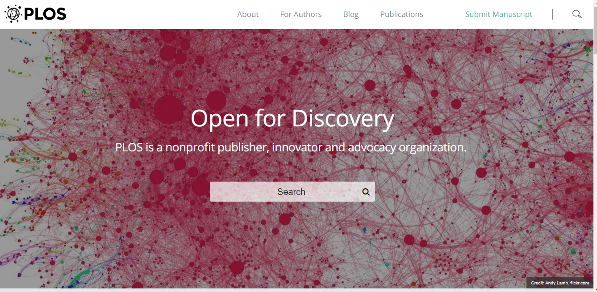

Data dan Artikel Ilmiah Terbuka dari PLOS!
Sebagian besar penerbit merupakan pemegang hak cipta atas artikel pada jurnal yang mereka terbitkan. Pihak manapun yang ingin membaca artikel-artikel tersebut, harus memiliki hak akses yang terkadang berbayar dan harus mendapatkan izin langsung dari pemegang hak ciptanya ketika mereka hendak menggunakan artikel tersebut.
Banyak ilmuwan beranggapan bahwa akses terhadap artikel pada jurnal-jurnal tersebut tidak berbayar. Memang, institusi tempat para ilmuwan tersebut bernaung menyediakan akses gratis terhadap artikel dari jurnal-jurnal yang dibutuhkan mereka. Namun, yang terjadi sebenarnya tidak sesederhana itu. Di balik itu semua, terdapat negosiasi rumit tentang biaya akses atau penggunaan kembali artikel-artikel dari jurnal yang diterbitkan oleh para penerbit tersebut.
Biaya yang harus dikeluarkan untuk mengakses artikel pada jurnal merupakan hal yang wajar apabila jurnal tersebut tersedia dalam format cetak. Di mana terdapat ongkos produksi yang harus dikeluarkan oleh penerbit untuk menyediakan banyak salinan jurnal kepada banyak pembaca. Namun, metode produksi dan distribusi terbitan jurnal kini berubah. Dengan adanya teknologi internet yang dapat memangkas ongkos produksi dan distribusi, keberadaan metode “bayar untuk akses” terlihat menjadi hal yang tidak relevan lagi.[1]
The Public Library of Science (PLoS)
PLoS adalah sebuah organisasi nirlaba yang berupaya agar literatur ilmiah dapat tersedia bebas sebagai sumber pengetahuan bersama. PLoS didirikan pada bulan Oktober tahun 2000 oleh tiga orang ilmuwan yaitu Harodl Varmus (mantan kepalaNational Institutes of Health), Pat Brown (ahli biologi molekuler dari Universitas Stanford), dan Michael Eisen (ahli biologi diLawrence Berkeley National LabdanUC Berkeley). Michael Eisen menerangkan bahwa tujuan utama pendirian PLoS adalah penyediaan publikasi-publikasi ilmiah yang sama sekali tidak memungut biaya dari pengaksesnya. Para pengakses materi publikasi tersebut dibebaskan untuk membaca, menggunakan kembali, dan menyebarluaskan materi-materi tersebut.
Untuk mencapai tujuan tersebut, PLoS berusaha mengubah sistem pemasukan penerbit dalam peran mereka sebagai pihak yang mengumumkan setiap ide maupun penemuan di dunia publikasi karya ilmiah. Yaitu praktik di mana penerbit memiliki kontrol eksklusif dan permanen terhadap karya ilmiah-karya ilmiah yang diterbitkan dan kemudian memungut biaya dari para pengakses artikel tersebut. PLoS ingin menggantinya dengan praktek di mana karya ilmiah ditempatkan sebagai sumber pengetahuan bersama dan menerapkan pola pembayaran dengan nilai yang wajar kepada penerbit atas layanan yang mereka berikan. Hal ini diupayakan agar biaya akses artikel ilmiah dapat ditekan atau dihapuskan, dan mengurangi praktik penarikan biaya yang cenderung mahal dengan pembagian keuntungan yang tidak adil antara penerbit dan pencipta karya ilmiah tersebut.[2]
Selain itu, PLoS berperan sebagai penerbit sekaligus penyedia advokasi dalam dunia keterbukaan akses pada karya ilmiah untuk memajukan dunia penelitian dan ada di barisan depan dalam perubahan model komunikasi dalam penelitian. Karena, keterbukaan akses pada penelitian dapat memudahkan proses kolaborasi antara peneliti yang sekaligus memudahkan praktik berkomunikasinya. Yang dimaksud dengan terbuka bukan hanya tentang terbukanya akses pada artikel ilmiahnya saja. Namun juga pada data-data yang dirujuk oleh artikel tersebut, transparansi dalam tinjauan sejawat, dan kemudahan penggunaan kembali data rujukan bagi sesama peneliti.

Dan terbuka juga diartikan sebagai pola pikir yang mewakili nilai-nilai terbaik di ranah penelitian. Salah satu tujuanya menyatukan para ilmuan dalam membagikan karyanya dengan secepat dan seluas mungkin, untuk mempercepat kemajuan sains dan bermanfaat bagi masyarakat secara keseluruhan.[3]
Lisensi Creative Commons (CC) di PLoS
Creative Commons dan PLoS memiliki tujuan yang sama dalam hal penguatan ilmu pengetahuan sebagai sumber milik bersama. Dalam hal ini PLoS menerapkan lisensi CC Atribusi (CC BY) 4.0 versi Internasional pada karya-karya ilmiah yang diterbitkannya. Tujuan penerapan ketentuan ini adalah untuk menyediakan akses sebebas mungkin terhadap ilmu pengetahuan tanpa melupakan unsur penghormatan minimal bagi pemegang hak cipta atas karya ilmiah tersebut, yaitu atribusi (penyebutan nama atau sumber rujukan). Penjelasan ketentuan lisensi CC BY 4.0 versi internasional yaitu sebagai berikut:

-
Adaptasi: Menggubah, mengubah, dan membuat turunan dari materi ini untuk kepentingan apapun , termasuk kepentingan komersial.
-
Atribusi: Anda harus mencatumkan nama yang sesuai, mencantumkan tautan terhadap lisensi, dan menunjukan bahwa telah ada perubahan yang dilakukan. Anda dapat melakukan hal ini dengan cara yang sesuai, namun tidak mengisyaratkan bahwa pemberi lisensi mendukung Anda atau penggunaan Anda.
Artinya, dibawah lisensi CC BY, penulis setuju untuk membuat artikel yang tersedia secara legal untuk digunakan kembali, tanpa izin atau membayar, untuk tujuan apa pun. Siapa pun dapat menyalin, menyebarkan atau menggunakan kembali artikel tersebut, selama atribusi yang baik diterapkan. Hal ini menunjukan bahwa setiap karya ilmiah yang diterbikan oleh PLoS merupakan konten dengan prinsip sumber terbuka (open source). [5]